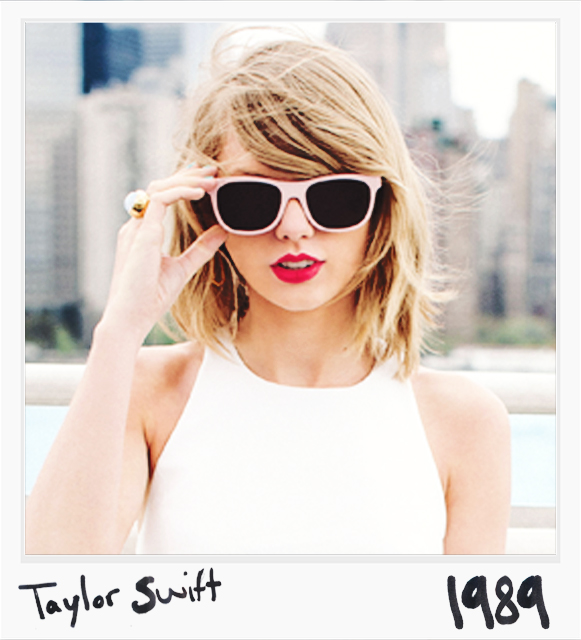
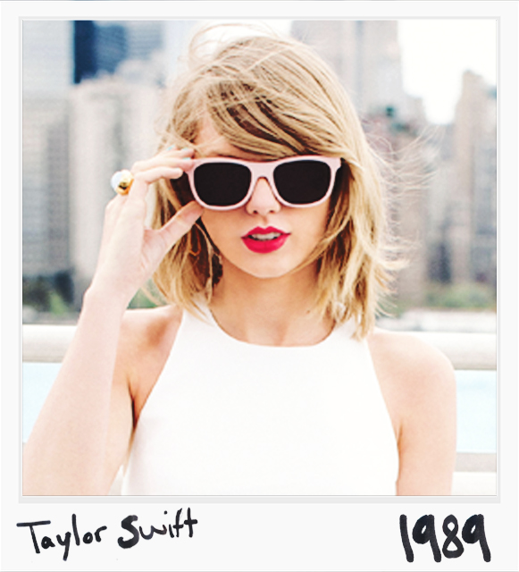

Synopsis
Born on December 13, 1989, in Reading, Pennsylvania, Taylor Swift's family moved to nearby Wyomissing where she started crafting songs at age 5, and at age 16, released her debut album.
Hits like "Love Story" and "You Belong With Me" appealed to country and pop fans alike and helped fuel the multiplatinum success of her albums, with Fearless the 2009 top-seller.
She has won many awards, including several Grammy Awards, and modeled for Cover Girl.
Early Life and Career
Taylor Alison Swift was born on December 13, 1989, in Reading, Pennsylvania. Swift spent her early years on her family's Christmas tree farm in nearby Wyomissing. Her grandmother had been a professional opera singer, and Swift soon followed in her footsteps. By the age of 10, Swift was singing at a variety of local events, including fairs and contests. She sang "The Star-Spangled Banner" at a Philadelphia 76ers game at the age of 11, and began writing her own songs and learning guitar at 12 years old.
To pursue her music career, Swift often visited Nashville, Tennessee, the country music capital. There she co-wrote songs, and tried to land a recording contract. Noting her dedication, Swift and her family moved to nearby Hendersonville, Tennessee, in an attempt to further Swift's career.
Country Crooner
A stellar performance at The Bluebird Café in Nashville helped Swift get a contract with Scott Borchetta's Big Machine Records. She released her first single, "Tim McGraw," in 2006, and the song became a Top 10 hit on the country charts. It also appeared on her self-titled debut album in October of that same year, selling more than 2.5 million copies. More popular singles soon followed, including "Our Song," a No. 1 country music hit. "Teardrops on My Guitar," "Picture to Burn" and "Should've Said No" were also successful tracks.
In addition to commercial success, Swift received a lot of critical praise for her debut effort. She won the Horizon Award from the Country Music Association (CMA) and the Academy of Country Music Award for Top New Female Vocalist in 2007. Swift next released Sounds of the Season: The Taylor Swift Holiday Collection in 2007. Her renditions of "Silent Night" and "Santa Baby" were modest hits on the country charts.
Pop Stardom
In 2008, Swift was nominated for a Grammy Award in the Best New Artist category, and won the Academy of Country Music's "Female Vocalist of the Year" Award, the American Music Awards "Favorite Female Country Artist" award, and the American Music Association's "Horizon" award.
Around this same time, Swift released her next album, Fearless (2008), which hit the top of both the country and pop charts and stayed there for 11 weeks.
By the end of the year, Swift had become the highest-selling country artist of 2008.
Full Transition to Pop and 1989
Swift's fifth studio album, 1989, was released on October 27, 2014. Swift wrote one song alone, and co-wrote the remaining 12 with Antonoff, Martin, Shellback, Imogen Heap, Ryan Tedder and Ali Payami. Martin and Swift served as executive co-producers while Chapman, Antonoff, Heap, Tedder, Payami and Greg Kurstin produced individual tracks. Musically, it has been described as an album "driven by synths and drums in lieu of guitar." Swift herself described 1989 as her first "official" pop release and parted ways with some members of her longtime band.
The album's lead single, "Shake It Off," was released in August 2014 and reached number one on the Billboard Hot 100. Two further singles have been released; "Blank Space" (Swift's third number one on the Billboard Hot 100) and "Style". 1989 sold 1,287,000 copies in the U.S. during the first week of release, selling more copies in its opening week than any album in the previous 12 years, and making Swift the first and only act to have three albums sell more than one million copies in the opening release week. It later became the best-selling album of 2014, selling 3.66 million copies. As of February 2015, 1989 had sold over 8.6 million copies worldwide.